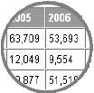
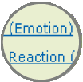
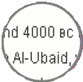

Bowman Library Research Skills Tutorial
The modules in this tutorial will put you on the right track when you research information for your projects.
This tutorial consists of five modules. It is best to view the modules in the order they appear, but you do not have to do all of them at one time.
For the most interactive experience, it is best viewed on a laptop or desktop computer, but can be viewed on mobile devices.
Each module is followed by a quiz. More details on that before you begin the quiz.
In this module, you'll be introduced to types of information sources, both popular and scholarly.
You'll also learn about the information process.
Research starts with a question
For each project, ask yourself:
- What do I want to know?
- What is the information I need to find to answer my question?
Some of your projects at Menlo might include:
- Doing market research on a product or company
- Finding scholarly articles for a psychology assignment
- Writing a paper about an ancient civilization
 Researching a controversial issue for a debate
Researching a controversial issue for a debate- Creating a business plan
Types of information sources
In order to determine which sources are the most authoritative and will best meet your needs for a particular project, you have to understand something about the types of information sources that exist.
- Some sources you'll use to answer research questions might be:
- data and statistics
- magazine, newspaper, and journal articles
- books
- You'll use information sources in print and online formats.
- You'll use both popular and scholarly sources, depending on the project
- Popular sources are written for a general audience. Scholarly sources are written for an academic audience. You'll hear about these sources in more detail later.
- Each type of information source is the product of a process involving varying amounts of research, writing, and review.
- Let's take a closer look, beginning with data and statistics.
Data and statistics
- Data interpretation and analysis lead to the creation of information and knowledge.
- Data collection can take minutes (such as weather data) or years (such as census data)
- Data are multidisciplinary; the same set of data can be used by researchers in many different fields.
- Data can be in either numeric or non-numeric form. For example, statistics about traffic patterns are numeric data, while videos of runners at the finish line of a race are non-numeric data.
- Knowing how to find and make use of data will be a valuable skill long after you graduate.
Popular sources
Here, the word "popular" is used to describe something that is intended for use by the general public.
Popular information sources:
- May be online, in print, or both.
- Include some books, as well as magazines, newspapers, blogs, web sites, product catalogs and reviews, and company annual reports.
- Are published on a daily, weekly, or monthly basis and can take anywhere from a day (newspapers) to months (in- depth magazine articles) to produce.
- Are written by paid journalists or authors who may not have scholarly expertise.
- May report on the original research of others, information from scholarly sources, current events, and include data or facts about events.
- Often do not include bibliographies or lists of sources.
- May be reviewed by editors or may be self-published.
- Are selected by librarians for the Library's collection based on subjects that students and faculty research here at Menlo.
Scholarly/academic sources
- Scholarly sources are also often called academic, peer-reviewed, or refereed sources.
- Scholarly sources can take months or years to produce and publish because of the research and review process that goes into creating them.
- Let's take a look at this research and review process.
The scholarly research and review process
 Researchers conduct research or experiments, then write about their findings.
Researchers conduct research or experiments, then write about their findings.- Researchers submit the article to a peer-reviewed journal or, if it's a book, to an academic press or publisher.
- The article or book is reviewed by other experts (the researchers' peers) in the same field as the researcher.
- Peer-reviewers may suggest or require changes, or they may reject the work entirely.
- Researchers make changes based on the reviewers' comments.
- The article or book is published by the journal or publisher in print and digital formats.
- Librarians review, select, and subscribe to books, print journals, and online databases containing these scholarly works to support courses and research at Menlo. Access is provided on the Library's web site.
- Researchers identify a question or topic in need of further research.
Textbooks and reference works:
- Compile and synthesize the most important information about a subject from other scholarly sources
- Provide an overview of essential knowledge on a subject
- May be general (World Encyclopedia) or subject specific (Dictionary of Psychology)
Reference works :
- Are an excellent place to begin your search
- Are not intended to be read cover to cover
- Provide background, main concepts, and organization of a topic
- Provide the important vocabulary and terms you'll use when you begin to search for more information
- Can be in print or online
Scholarly information sources: Is Wikipedia one?
- You're familiar with Wikipedia, but it is not an academic source.
- Entries in Wikipedia are created by many contributors, many of whom are not experts.
- Information in Wikipedia is sometimes inaccurate or incomplete.
- But before disregarding Wikipedia, consider how it can be useful:
- Offers an overview of an unfamiliar topic
- Provides useful keywords or search terms
- Might include a bibliography with sources that you can use to find more information
Exercise
Overview of the information process
Although the various types of information sources are different in several ways, they also have something in common: the use of data. Data are the building blocks of information and include much more than numbers. Data are facts, events, and items of information presented in visible form.
- Popular sources: Researchers and writers of popular sources such as news articles, blogs, and books often include data, facts, and details of events in their work.
- Scholarly sources: Just as data form the basis for popular information sources, data play an even larger role in scholarly work. Scholarly information sources include things like journal articles, scholarly books, data sets, dissertations, textbooks, and reference works.
- Scholarly & popular sources: We've talked about the research process from data to published work. But where do YOU fit in?
Where YOU fit into the process:
- Understanding the differences between information types will help you decide which sources to use for your projects.
- This knowledge will also help you decide where to search.
Recap of what you've learned
Now that you've completed this module, you should be able to:
- Recognize the central role of data in the information process
- Identify characteristics of popular and scholarly information sources
- Understand the scholarly research and review process
In the next module, we'll discuss the process of searching for information.
Getting ready to search
In Module 1 you learned about types of information sources; now it’s time to start using some of them.
In this module, you’ll learn how to search library resources effectively.
Designing your search
It’s your turn to design a search
In a class or in the work world, you may have a project like the one listed below. Review it carefully and discuss it with your professor or your boss and your client, if appropriate, to ensure you have a successful project.
Project:You work in the marketing field. You have a client who is investigating launching a new green product and is interested in the characteristics of consumers who use such products. Select terms you might use for each search category.
Remember that there may be other good search terms that we haven’t listed here.
Brainstorm a concept map
- Sometimes a visual or concept map can also help you brainstorm search terms.
- Additionally, it might help you develop an outline for your project.
Here’s a sample concept map for the following psychology project:
Examine the psychological causes and effects of bullying among adolescents.
Once you’ve considered the search terms you’ll use, you’re ready to try them out in a search. But where will you start?
Web Searching
Your first stop might be Google, and you might have some success there, but remember…
You’ll get millions of results to sort through, many of which will not be helpful.
Going beyond Google
Google sometimes is the fastest, easiest way to the information you need –think about movie listings or sports scores –but it might not meet your needs for academic projects.
- There are ways you can use Google successfully in your academic work, such as Google Scholar, and we’ll discuss that in the next module.
- But if not Google, where should you start your search?
Using library resources
The place to start your search is the Library’s web site. You’ll find thousands of online and print resources that have been selected by the Menlo librarians to support your classes and assignments.
You won’t find most of our resources on Google or the Web because our subscriptions are available only to the Menlo community.
When you need books and e-books, you can find them in our catalog; when you need articles, you can find them in our databases.
And when you need to know if the Library subscribes to a particular magazine, journal, or newspaper, you can use the Journal Finder to search by title. It will tell you if the publication is available on our shelves or in our databases.
So, what is a database?
- You’ll hear the word “database” a lot when using library resources, so let’s be sure you know what they are.
- Databases are searchable collections of information. You already use them when you search for songs in iTunes, for friends in Facebook, and for books in Amazon.
- Most databases rely on similar methods of searching, so while the databases themselves may look different, once you have mastered one, it’s much easier to learn how to search others.
Library catalog
The Library catalog is one database you’ll be using. It’s the place to find print books, e-books, dvds, cds, print magazines, and print journals.
- You won’t find individual articles here, however. You’ll have to search one of the Library’s subscription databases for those.
- Let’s take a look at how to search the Bowman Library catalog.
Searching the catalog
Recap of what you've learned
Now that you’ve completed this module, you should be able to:
- Design a search based on the requirements of your project
- Identify relevant search terms
- Understand the function of databases
- Use the library catalog
In the next module, we’ll continue to focus on searching and look at the Library’s article databases.
Continuing to search
In the previous module on searching, we discussed using the library catalog when you need books.
In this module, we’ll talk about the times when you’ll need articles from periodicals (magazines, journals, newspapers). That’s when you’ll want to turn to the Library’s databases.
Library databases (what)
What you'll find in the library databases:
- Journal, magazine, and newspaper articles, both current and past
- Articles from encyclopedias and other reference works, both scholarly and popular
- Country demographics
- Company reports
- Financial/stock data
Library databases (where)
On the Library’s web site you’ll find an alphabetical list of all our databases, as well as lists of databases by subject.
We also have lists of the databases most useful for specific classes. Look for the links to Course Research Pages and Subject Research Guides on the Library’s home page.
Library databases (when)
If you’re not sure where to begin your search, you can always ask a librarian, in person or by phone. We’re here every hour that the Library is open and we’re here to help! You can access the library databases 24/7 with your library barcode.
It's your turn to choose databases
Individual library databases might focus on only one subject, such as psychology or business, or might contain articles from many disciplines. Using the description of the databases listed below, match each with the kind of information you might expect to find there.
Advanced search techniques
- Scholarly databases like the ones the Library subscribes to are more complicated to use than search engines like Google and Yahoo because they offer sophisticated tools and techniques for searching that can improve your results.
- Many databases, including the library catalog, offer tools to help you narrow or expand your search. Take advantage of these.
- The most common tools are:
- Boolean searching
- Truncation
Boolean searching
Boolean searching uses AND, OR, and NOT when combining your search terms. Click on each pair of circles in the diagrams below to learn more.
When you combine search terms with AND, you’ll get results in which BOTH terms are present. Using AND limits the number of results because all search terms must appear in your results.
When you use OR, you’ll get results with EITHER search term. Using OR increases the number of results because either search term can appear in your results. Note that there could be some results in which both terms appear.
When you use NOT, you’ll get results that exclude a search term. Using NOT limits the number of results.
Truncation
- Truncation allows you to search different forms of the same word at the same time.
- Use the root of a word and add a symbol (such as an asterisk -*) as a substitute for the word’s ending.
- Psycho* --psychology, psychological, psychologist, psychosis, psychoanalyst
- Truncation can save time and increase your search to include related words.
- Now let’s take a look at these tools in action.
Searching a library database
And what about Google Scholar?
In the last module, we promised to show you how you can use Google for academic research. In our list of databases you’ll find Google Scholar, which is a subset of regular Google.
It includes only journal articles, books, and reports from academic publishers, professional societies, online repositories, universities, and other web sites –exactly the kinds of scholarly sources your professors will often want from you.
While you won’t always find full text on Google Scholar (that’s one of its limitations), you canfind the citation of an article so you’ll have its title, author, journal title, date, and page numbers.
Finding the full text of an article when you have only a citation
- You can then take that citation information to the Library’s Journal Finder to see if one of our databases contains the journal you need.
- Having only a citation for an article isn’t a dead end. It contains all the information you’ll need to find the full text.
- Let us show you some ways to get the article you want.
Using the Journal Finder
Using databases after you graduate
You’ll continue to use databases after you leave Menlo. Becoming an expert at using them now will give you a leg up later on.
- Your job or company may subscribe to them –perhaps LexisNexis in the legal field, Hoover’s or Mergentfor business.
- Every public library will have a selection of databases for you to use.
- You’ll use publicly available databases, such as yahoofinance.com, census.gov, webmd.com, espn.com.
Where YOU fit in the process –research takes time –don’t wait
Even though we live in a 24/7 world and sources are readily available online, it still takes time to find, evaluate, and read the right sources for your projects. Following the suggestions below will help you succeed.
- Read carefully
- Find new search terms as you explore a topic more thoroughly
- Take notes as you read
- Write down your search terms in a notebook
- Document all your sources as you read so you don’t have to find them all over again when it’s time to put together your bibliography
Recap of what you've learned
Now that you’ve completed this module, you should be able to:
- Identify the kinds of information contained in library databases
- Use the Bowman Library databases to find articles
- Use techniques for advanced searching, such as Boolean searching and truncation
- Find an article from its citation
- Order a publication through interlibrary loan
- In the next module, you’ll learn more about evaluating the information you find, plus tips for quick and thorough previewing of academic sources.